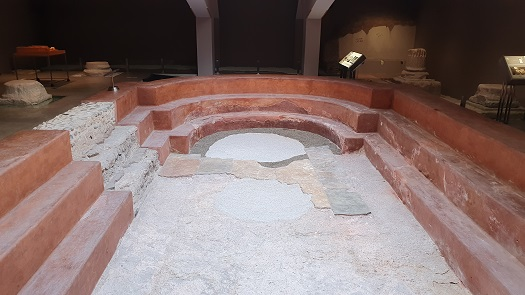
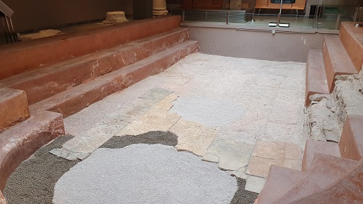
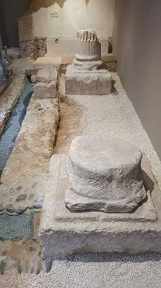
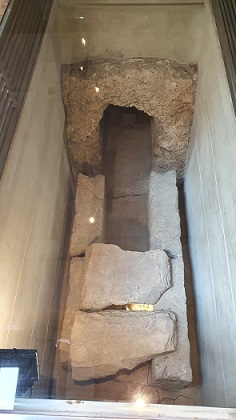

|
LA
PISCINA PORTICADA
|
La piscina que hoy
apreciamos fragmentada, fue construida a mediados del siglo I; es de
planta rectangular, conservándose sólo 9,7m de su longitud, cuyo total
se estima en 15,8m. La parte conservada se remató en forma de ábside
lobulado. A la piscina se accede a través de tres escalones, que la
recorren en todo su perímetro, y su fondo estuvo pavimentado con placas de
mármol, parte de las cuales fueron levantadas y reutilizadas después del
cese de la actividad termal a comienzos del siglo IV.
|
 |
 |
|
Del pórtico que
rodeaba la piscina cuya altura se estima entre los 5 y 6
metros, se conservan restos de 3 basas de columna y varios de sus
apoyos. Alrededor de la piscina y delante de las basas se
colocó un listón de mármol, que impedía que el agua de la
piscina salpicase al interior del pórtico, cuyo suelo estaba
pavimentado con placas de mármol en los intercolumnios.
La superficie de la sala era más amplia que la actual, y se
conservan, como pequeña muestra del recubrimiento de sus paredes,
los restos de un conjunto de placas de mármol, decoradas con motivos
diversos: figuras geométricas, escudos cruzados, etc. La
ornamentación de la sala se completaría con varias esculturas.
| |
|
|
 |
 |
Ver
Termas romanas |
|
|
|